4. Structural motion and interfacial release
结构运动与界面释放
From pressure to structural motion and interfacial release. Corresponding to Theory 04, source page 4.
从压力到结构运动，再到界面释放。对应 Theory 04，原始材料第4页。
The fourth page contains two complementary mechanical reductions: a flexural mode describing laminate motion, and a first-arrival wave calculation describing through-thickness transmission. Neither, by itself, supplies a resolved cohesive-interface traction history. [S1, p. 4]
第4页包含两种互补的力学简化：用弯曲模态描述层合结构运动，以及用首波计算描述厚度方向的传输。这两种简化中的任何一种，都不能单独给出经过空间解析的黏聚界面牵引历程。[S1，第4页]
4.1 Reducing the laminate to one generalized coordinate
将层合结构简化为一个广义坐标
Approximate the transverse displacement as
将横向位移近似为
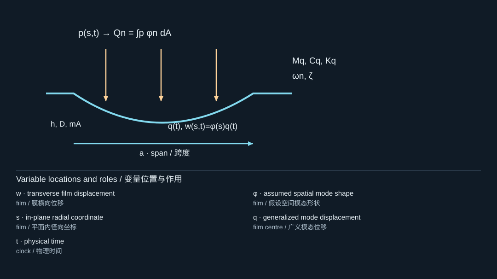
The diagram locates the physical system; its key lists the symbols in the formula. Read the definition in the surrounding derivation when a letter has different roles.
图示标出物理体系，图例列出公式中的符号。若某字母有多种作用，应以邻近推导中的定义为准。
where is an assumed spatial shape and its amplitude.
其中， 是假定的空间振型， 是其幅值。
The printed modal coefficients can be reconstructed using the clamped-disk shape
采用以下固支圆盘振型，可以重构原始材料中的模态系数：
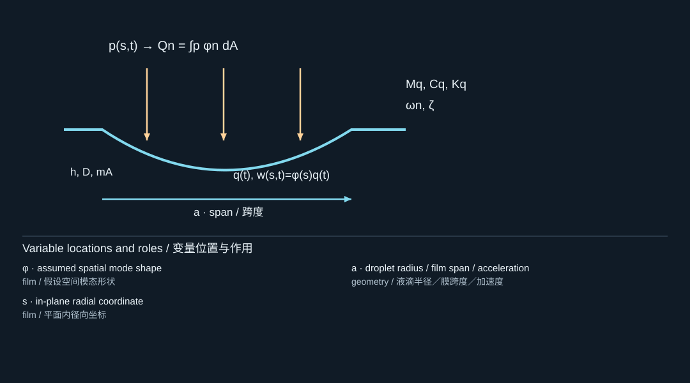
The diagram locates the physical system; its key lists the symbols in the formula. Read the definition in the surrounding derivation when a letter has different roles.
图示标出物理体系，图例列出公式中的符号。若某字母有多种作用，应以邻近推导中的定义为准。
It satisfies
它满足
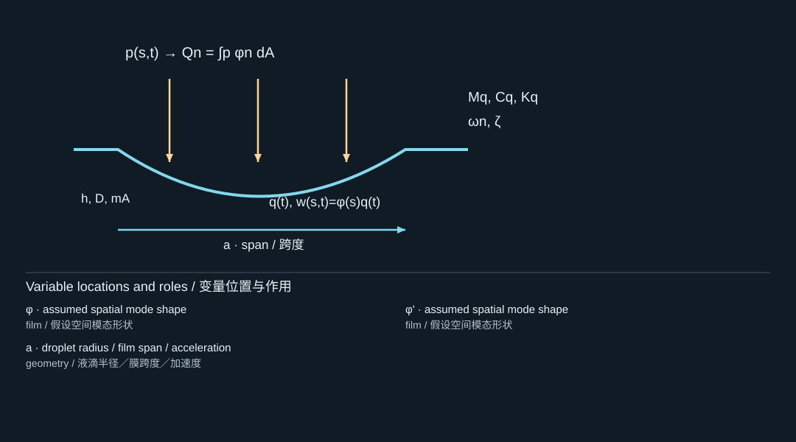
The diagram locates the physical system; its key lists the symbols in the formula. Read the definition in the surrounding derivation when a letter has different roles.
图示标出物理体系，图例列出公式中的符号。若某字母有多种作用，应以邻近推导中的定义为准。
Thus the edge is clamped and is the centre displacement. This is an admissible assumed shape, not a claim that the exact laminate eigenmode has been measured.
因此，边缘为固支条件， 就是中心位移。这是一个满足边界条件的假定振型，并不意味着已经测得层合结构的精确固有模态。
Modal mass
模态质量
Let be laminate mass per unit area. The kinetic energy is
以 表示层合结构的单位面积质量。动能为
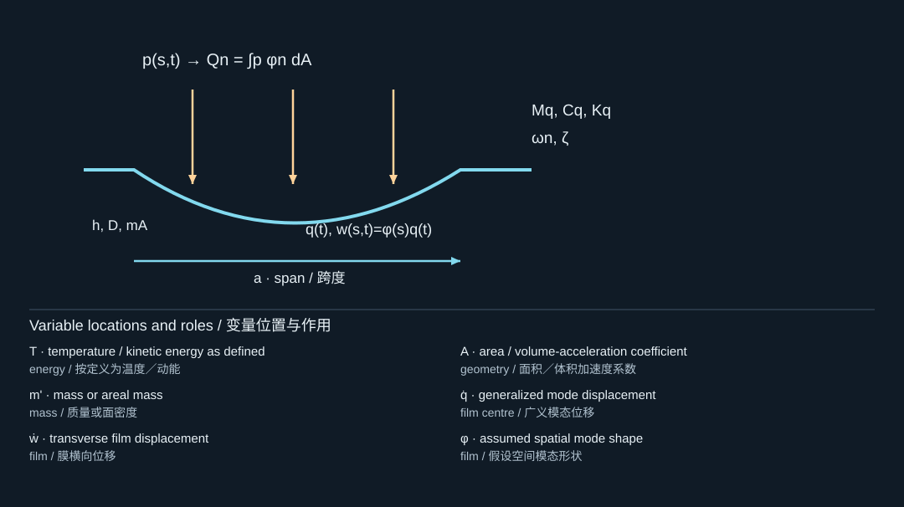
The diagram locates the physical system; its key lists the symbols in the formula. Read the definition in the surrounding derivation when a letter has different roles.
图示标出物理体系，图例列出公式中的符号。若某字母有多种作用，应以邻近推导中的定义为准。
Therefore,
因此
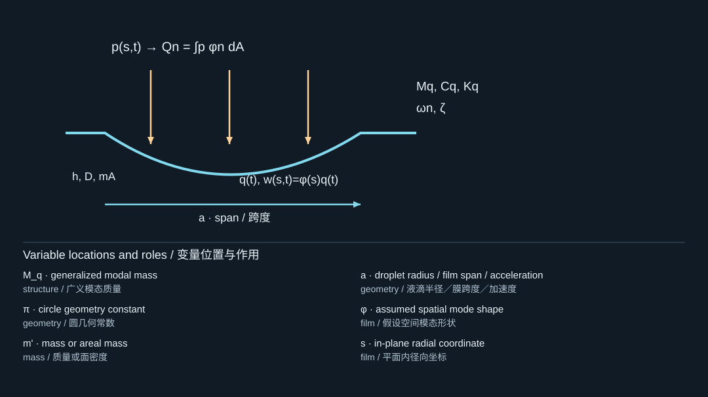
The diagram locates the physical system; its key lists the symbols in the formula. Read the definition in the surrounding derivation when a letter has different roles.
图示标出物理体系，图例列出公式中的符号。若某字母有多种作用，应以邻近推导中的定义为准。
Since
由于
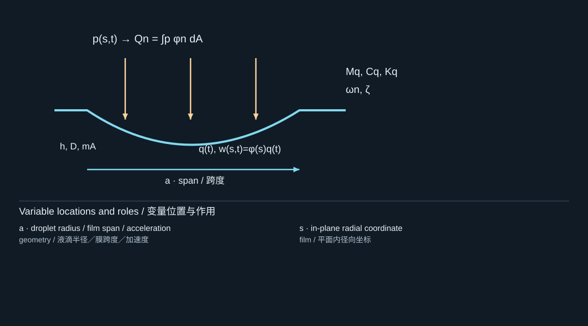
The diagram locates the physical system; its key lists the symbols in the formula. Read the definition in the surrounding derivation when a letter has different roles.
图示标出物理体系，图例列出公式中的符号。若某字母有多种作用，应以邻近推导中的定义为准。
we obtain
可得
The diagram locates the physical system; its key lists the symbols in the formula. Read the definition in the surrounding derivation when a letter has different roles.
图示标出物理体系，图例列出公式中的符号。若某字母有多种作用，应以邻近推导中的定义为准。
Modal stiffness
模态刚度
For an equivalent isotropic thin-plate reduction with bending rigidity ,
对于弯曲刚度为 的等效各向同性薄板简化模型，
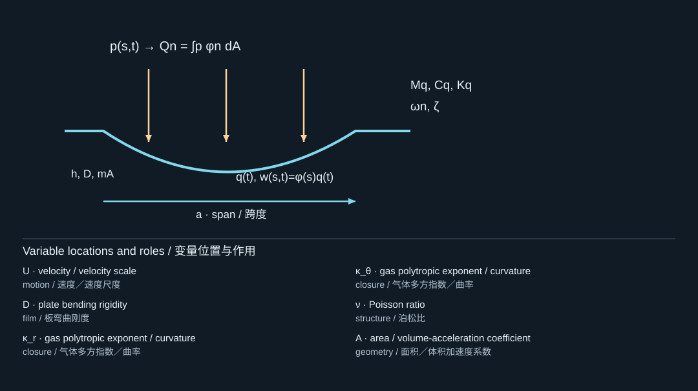
The diagram locates the physical system; its key lists the symbols in the formula. Read the definition in the surrounding derivation when a letter has different roles.
图示标出物理体系，图例列出公式中的符号。若某字母有多种作用，应以邻近推导中的定义为准。
where
其中
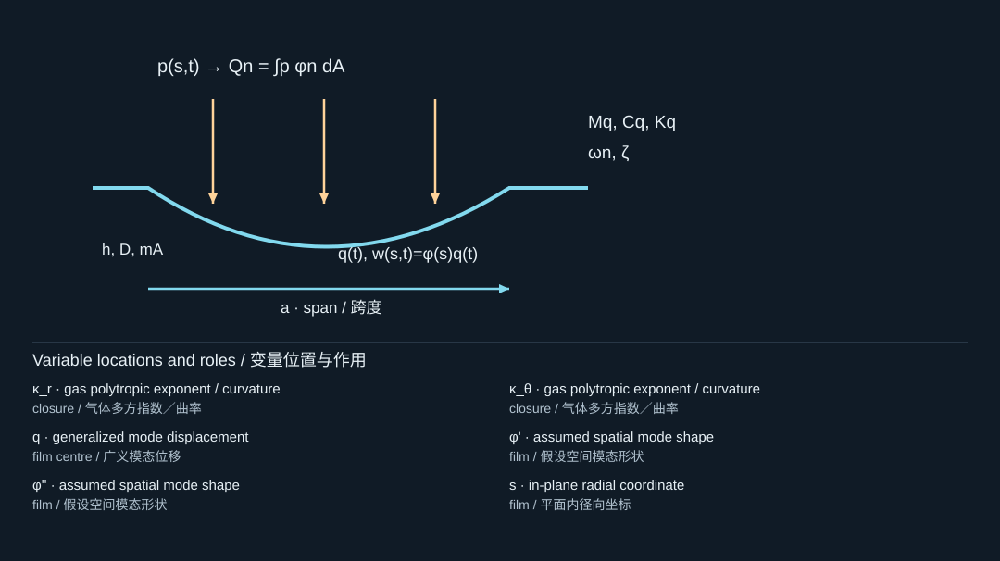
The diagram locates the physical system; its key lists the symbols in the formula. Read the definition in the surrounding derivation when a letter has different roles.
图示标出物理体系，图例列出公式中的符号。若某字母有多种作用，应以邻近推导中的定义为准。
Matching gives
与 对比，得到
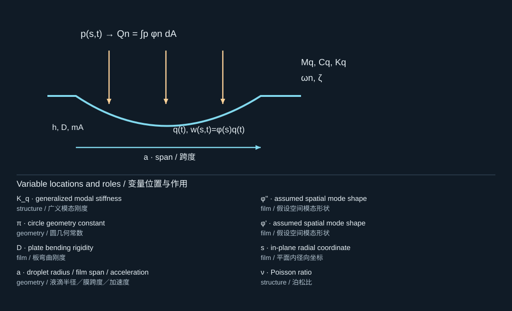
The diagram locates the physical system; its key lists the symbols in the formula. Read the definition in the surrounding derivation when a letter has different roles.
图示标出物理体系，图例列出公式中的符号。若某字母有多种作用，应以邻近推导中的定义为准。
For the selected shape,
对于选定的振型，
The diagram locates the physical system; its key lists the symbols in the formula. Read the definition in the surrounding derivation when a letter has different roles.
图示标出物理体系，图例列出公式中的符号。若某字母有多种作用，应以邻近推导中的定义为准。
so
所以
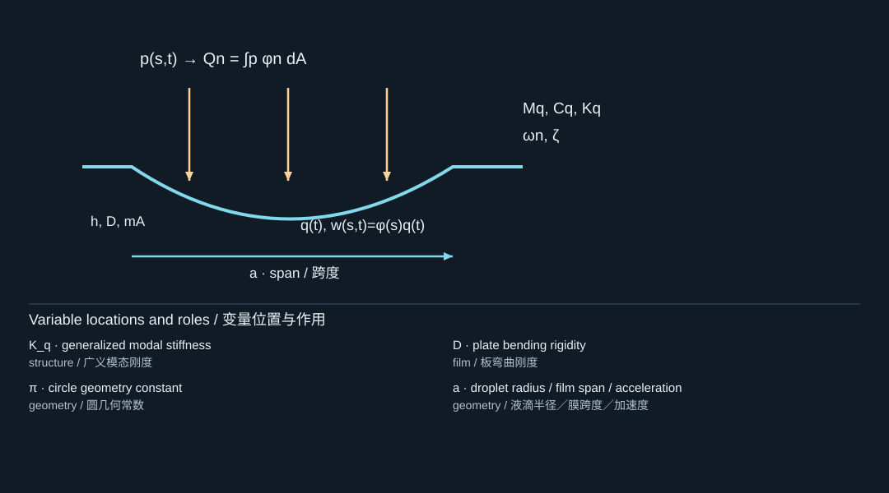
The diagram locates the physical system; its key lists the symbols in the formula. Read the definition in the surrounding derivation when a letter has different roles.
图示标出物理体系，图例列出公式中的符号。若某字母有多种作用，应以邻近推导中的定义为准。
The actual laminate rigidity still requires its layer constitutive properties and appropriate laminate assumptions.
实际层合结构的刚度 仍需根据各层本构参数与适当的层合理论假设确定。
Generalized load
广义载荷
Virtual work is
虚功为
The diagram locates the physical system; its key lists the symbols in the formula. Read the definition in the surrounding derivation when a letter has different roles.
图示标出物理体系，图例列出公式中的符号。若某字母有多种作用，应以邻近推导中的定义为准。
Since ,
由于 ，
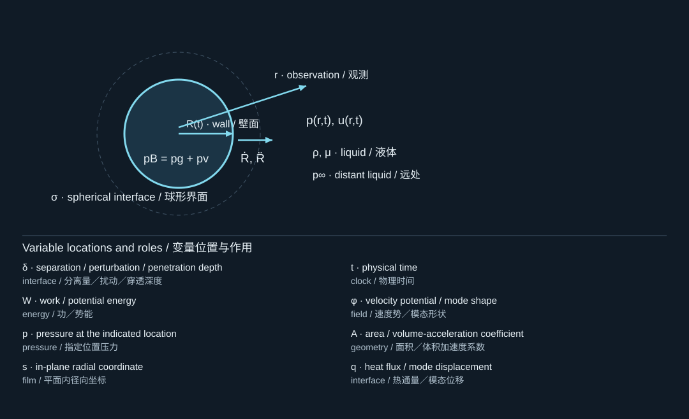
The diagram locates the physical system; its key lists the symbols in the formula. Read the definition in the surrounding derivation when a letter has different roles.
图示标出物理体系，图例列出公式中的符号。若某字母有多种作用，应以邻近推导中的定义为准。
Hence,
因此
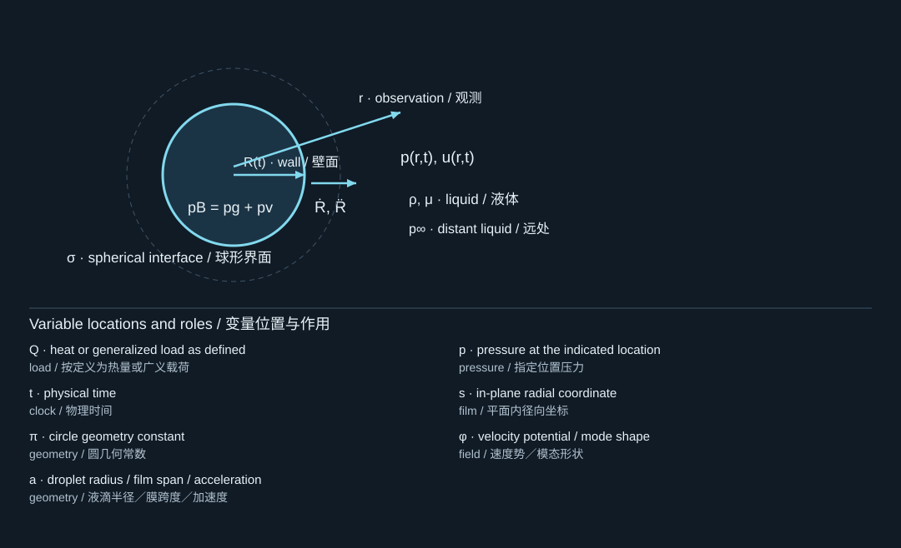
The diagram locates the physical system; its key lists the symbols in the formula. Read the definition in the surrounding derivation when a letter has different roles.
图示标出物理体系，图例列出公式中的符号。若某字母有多种作用，应以邻近推导中的定义为准。
Here is a generalized force, not the optical heating source .
这里的 是广义力，不是光学体热源 。
Lagrange’s equation, with modal damping , now gives
考虑模态阻尼 ，由 Lagrange 方程得到
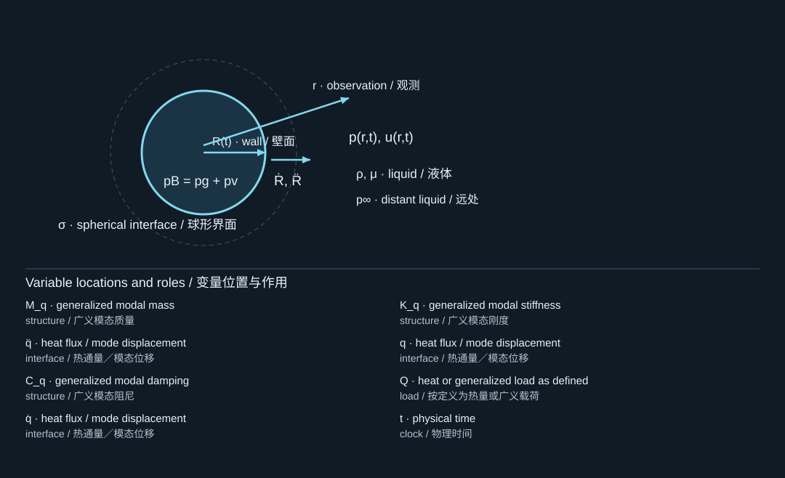
The diagram locates the physical system; its key lists the symbols in the formula. Read the definition in the surrounding derivation when a letter has different roles.
图示标出物理体系，图例列出公式中的符号。若某字母有多种作用，应以邻近推导中的定义为准。
This is the reduced structural equation in the source. Its load is a spatial projection, not merely the pressure at the centre. [S1, p. 4]
这就是原始材料中的降阶结构方程。其载荷是压力场的空间投影，而不只是中心点的压力。[S1，第4页]
4.2 Why load timing matters
为什么载荷时序很重要
Define
定义
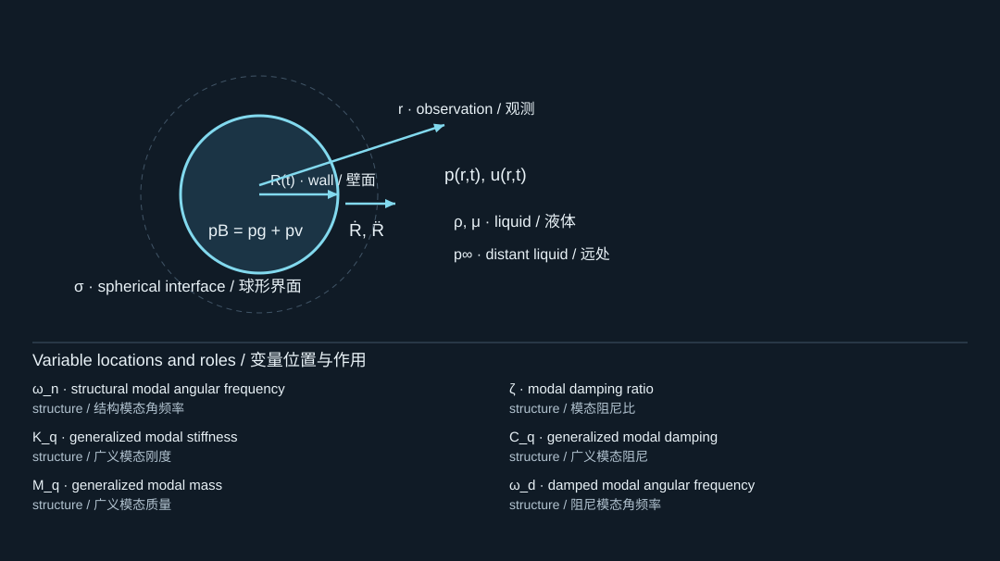
The diagram locates the physical system; its key lists the symbols in the formula. Read the definition in the surrounding derivation when a letter has different roles.
图示标出物理体系，图例列出公式中的符号。若某字母有多种作用，应以邻近推导中的定义为准。
For zero initial conditions and an underdamped mode,
在零初始条件及欠阻尼模态下，
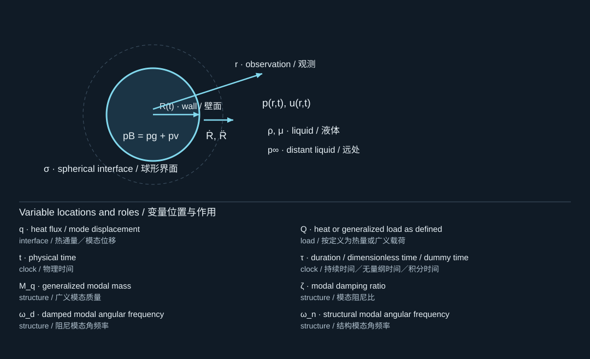
The diagram locates the physical system; its key lists the symbols in the formula. Read the definition in the surrounding derivation when a letter has different roles.
图示标出物理体系，图例列出公式中的符号。若某字母有多种作用，应以邻近推导中的定义为准。
This follows by convolving the load with the oscillator’s impulse response.
这是将载荷与振子的脉冲响应进行卷积得到的结果。
The sine factor is the key. The same load increment can increase or decrease the current motion depending on when it arrives. Therefore, two histories with equal net impulse need not produce equal peak displacement. This mathematically explains the phase sensitivity discussed on source page 3. [S1, p. 3]
关键在于正弦因子。同样的载荷增量，根据到达时刻的不同，可能增强当前运动，也可能削弱当前运动。因此，净冲量相同的两条载荷历程，不一定产生相同的峰值位移。这从数学上解释了原始材料第3页讨论的相位敏感性。[S1，第3页]
4.3 Why equal total impulse can also fail spatially
为什么总冲量相同仍可能产生不同的空间响应
Write a separable pressure distribution as
将可分离的压力分布写成
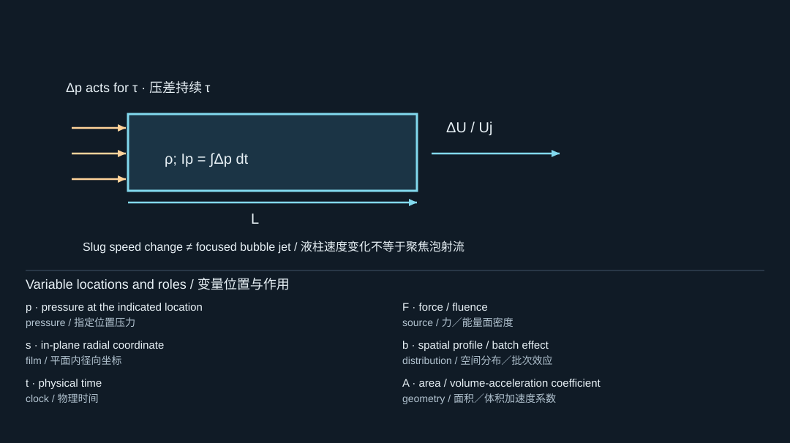
The diagram locates the physical system; its key lists the symbols in the formula. Read the definition in the surrounding derivation when a letter has different roles.
图示标出物理体系，图例列出公式中的符号。若某字母有多种作用，应以邻近推导中的定义为准。
Then is total force, while
此时 为总力，而
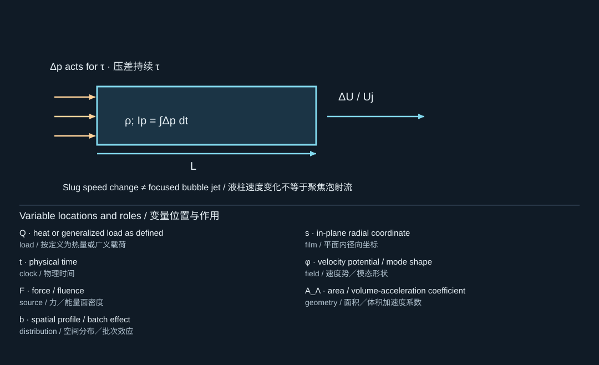
The diagram locates the physical system; its key lists the symbols in the formula. Read the definition in the surrounding derivation when a letter has different roles.
图示标出物理体系，图例列出公式中的符号。若某字母有多种作用，应以邻近推导中的定义为准。
Two distributions can have the same total force history but different modal participation factors .
两个分布可以具有相同的总力历程，却具有不同的模态参与因子 。
For example, uniform loading over the entire disk has
例如，整个圆盘上的均匀载荷对应
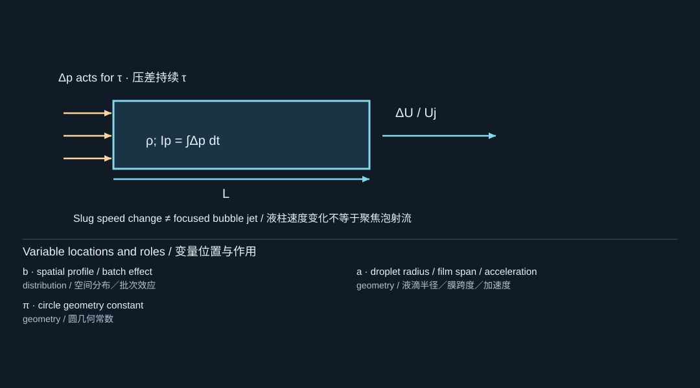
The diagram locates the physical system; its key lists the symbols in the formula. Read the definition in the surrounding derivation when a letter has different roles.
图示标出物理体系，图例列出公式中的符号。若某字母有多种作用，应以邻近推导中的定义为准。
giving
因此
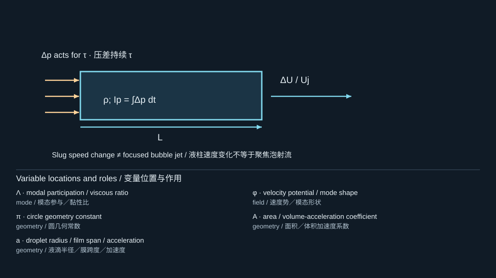
The diagram locates the physical system; its key lists the symbols in the formula. Read the definition in the surrounding derivation when a letter has different roles.
图示标出物理体系，图例列出公式中的符号。若某字母有多种作用，应以邻近推导中的定义为准。
A strongly centre-concentrated load samples , giving a participation factor approaching one.
高度集中于中心附近的载荷作用在 的区域，因此其参与因子接近1。
This is an illustrative consequence of the assumed shape, not a numerical reconstruction of the source’s bars. It explains why the top-hat, Gaussian, and raised-cosine distributions in the source produce different centre displacements despite equal total impulse. [S1, p. 4]
这是采用该假定振型后得到的示意性结论，并不是对原始材料中柱状图的数值复现。它解释了为什么原始材料中的顶帽、高斯和升余弦分布，即使总冲量相同，也会产生不同的中心位移。[S1，第4页]
4.4 Deriving first-arrival wave transmission
推导首波传输
For one-dimensional longitudinal motion in an isotropic elastic layer,
对于各向同性弹性层中的一维纵向运动，
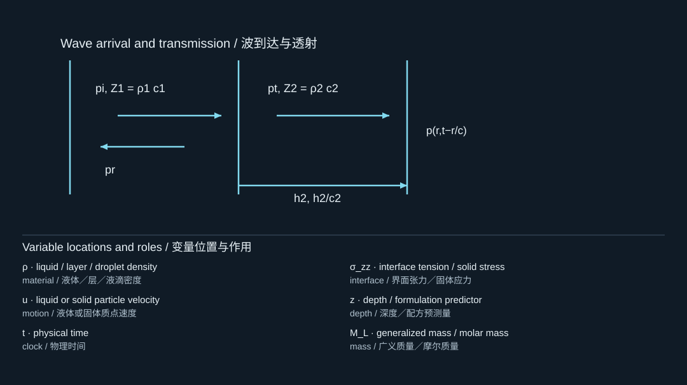
The diagram locates the physical system; its key lists the symbols in the formula. Read the definition in the surrounding derivation when a letter has different roles.
图示标出物理体系，图例列出公式中的符号。若某字母有多种作用，应以邻近推导中的定义为准。
where the longitudinal modulus is
其中纵向模量为
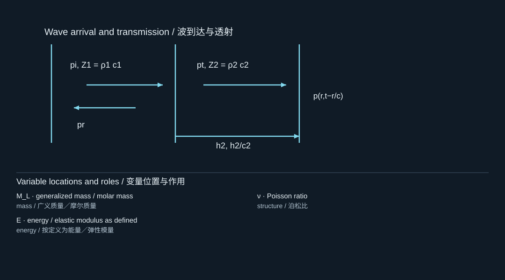
The diagram locates the physical system; its key lists the symbols in the formula. Read the definition in the surrounding derivation when a letter has different roles.
图示标出物理体系，图例列出公式中的符号。若某字母有多种作用，应以邻近推导中的定义为准。
Combining gives a wave equation with speed
将两式结合，得到波动方程，其波速为
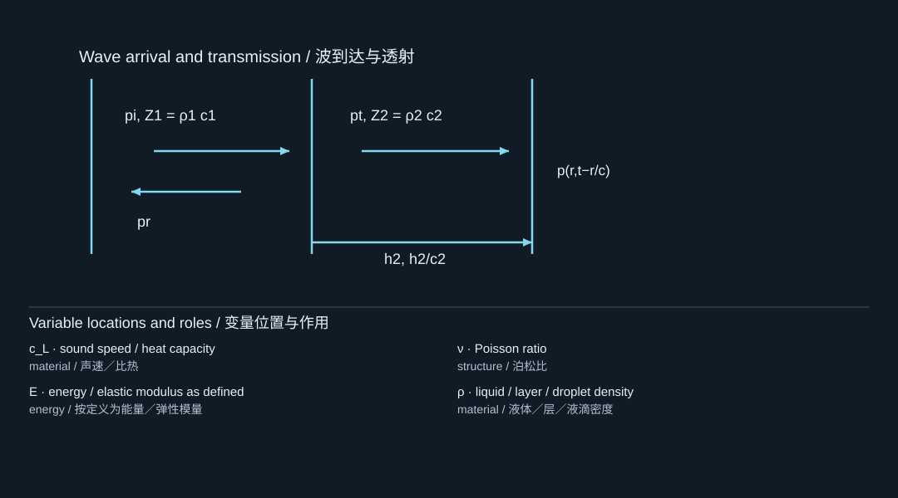
The diagram locates the physical system; its key lists the symbols in the formula. Read the definition in the surrounding derivation when a letter has different roles.
图示标出物理体系，图例列出公式中的符号。若某字母有多种作用，应以邻近推导中的定义为准。
The corresponding impedance is
相应的阻抗为
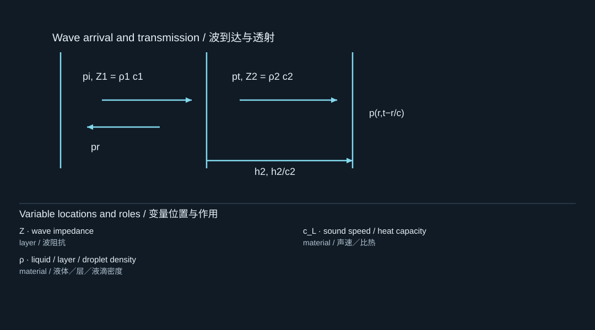
The diagram locates the physical system; its key lists the symbols in the formula. Read the definition in the surrounding derivation when a letter has different roles.
图示标出物理体系，图例列出公式中的符号。若某字母有多种作用，应以邻近推导中的定义为准。
For a normally incident wave at an ideal bonded interface, let denote incident, reflected, and transmitted compressive amplitudes. Continuity of traction and particle velocity gives
对于垂直入射到理想粘结界面的波，以 分别表示入射、反射与透射的压缩波幅值。由牵引连续和质点速度连续条件可得
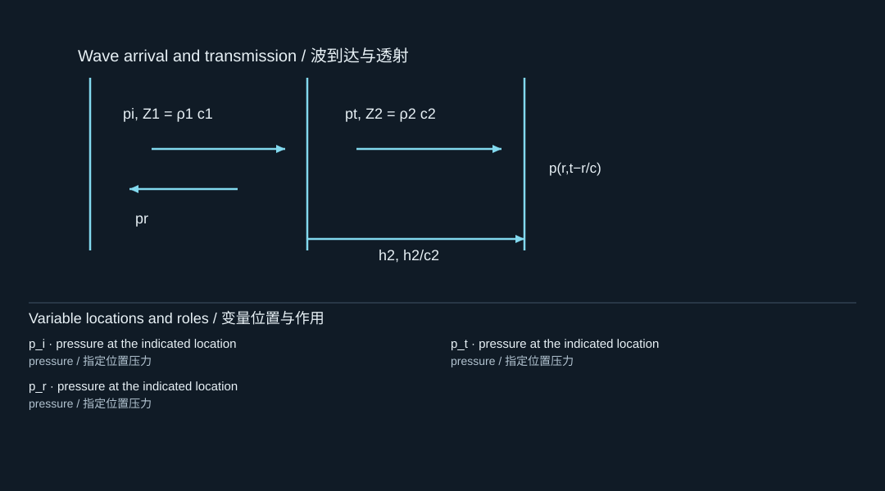
The diagram locates the physical system; its key lists the symbols in the formula. Read the definition in the surrounding derivation when a letter has different roles.
图示标出物理体系，图例列出公式中的符号。若某字母有多种作用，应以邻近推导中的定义为准。
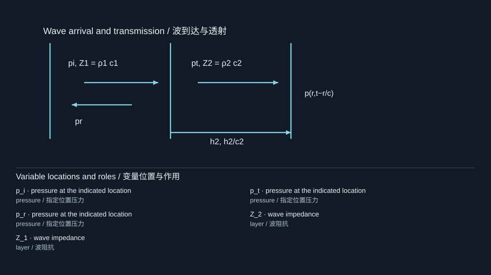
The diagram locates the physical system; its key lists the symbols in the formula. Read the definition in the surrounding derivation when a letter has different roles.
图示标出物理体系，图例列出公式中的符号。若某字母有多种作用，应以邻近推导中的定义为准。
Solving,
求解得到
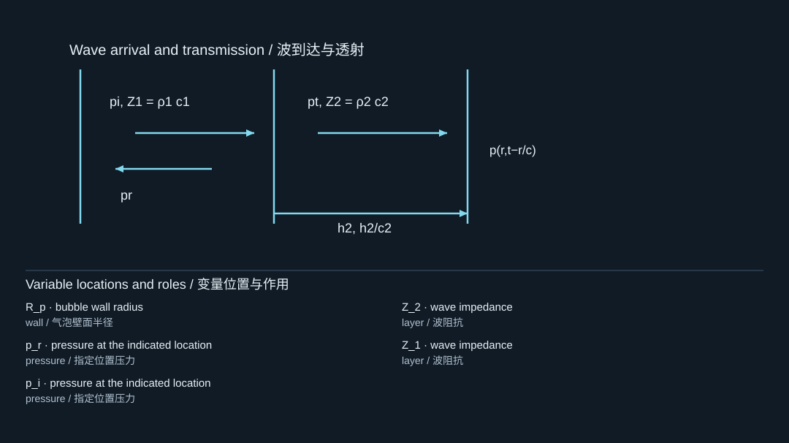
The diagram locates the physical system; its key lists the symbols in the formula. Read the definition in the surrounding derivation when a letter has different roles.
图示标出物理体系，图例列出公式中的符号。若某字母有多种作用，应以邻近推导中的定义为准。
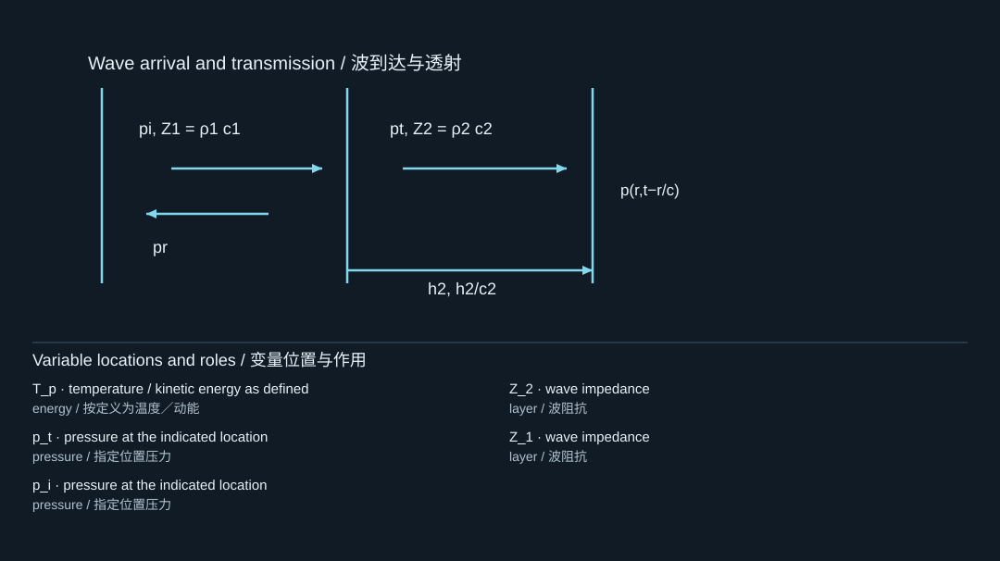
The diagram locates the physical system; its key lists the symbols in the formula. Read the definition in the surrounding derivation when a letter has different roles.
图示标出物理体系，图例列出公式中的符号。若某字母有多种作用，应以邻近推导中的定义为准。
Because energy flux scales as , the energy-transmission coefficient is
由于能流按 缩放，能量透射系数为
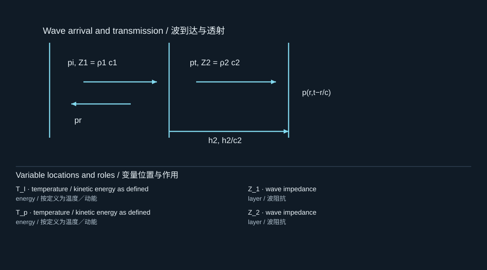
The diagram locates the physical system; its key lists the symbols in the formula. Read the definition in the surrounding derivation when a letter has different roles.
图示标出物理体系，图例列出公式中的符号。若某字母有多种作用，应以邻近推导中的定义为准。
Thus does not imply that transmitted energy exceeds incident energy.
因此， 并不意味着透射能量超过入射能量。
For a stack,
对于多层堆叠结构，
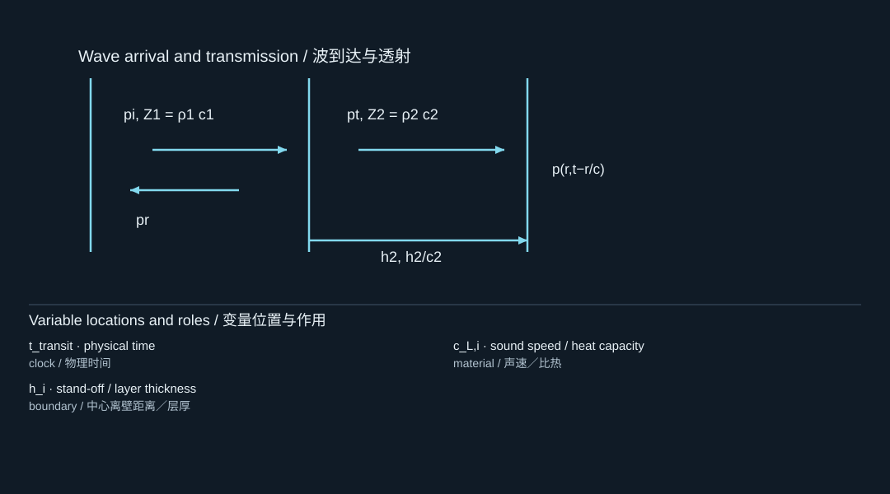
The diagram locates the physical system; its key lists the symbols in the formula. Read the definition in the surrounding derivation when a letter has different roles.
图示标出物理体系，图例列出公式中的符号。若某字母有多种作用，应以邻近推导中的定义为准。
The source reports a one-way value of , but its calculation retains only the forward first arrival. Later reflections, attenuation, shear transmission, and the resolved through-thickness field are not included. A short first-arrival time does not make those omitted effects irrelevant. [S1, p. 4]
原始材料报告的单程传播时间为 ，但计算仅保留了首次正向到达的波。后续反射、衰减、剪切传输，以及完整解析的厚度方向场均未包含在内。首波到达时间很短，并不意味着这些被忽略的效应不重要。[S1，第4页]
4.5 From transmitted loading to cohesive failure
从传递载荷到黏聚失效
Interfacial release requires a relation between traction and displacement discontinuity.
界面释放需要通过牵引与位移不连续之间的关系来描述。
The source introduces a cohesive form
原始材料引入了如下黏聚形式：
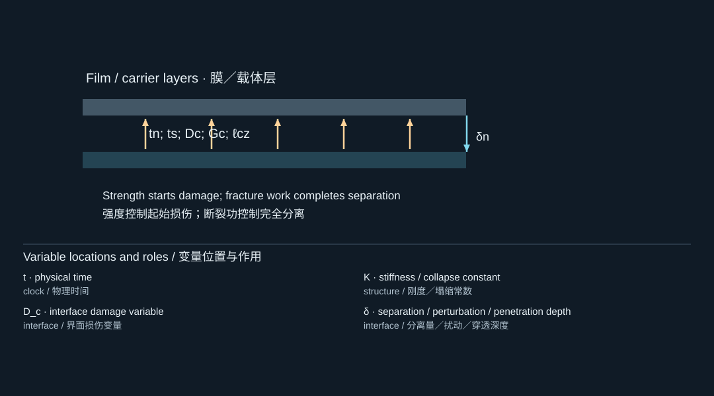
The diagram locates the physical system; its key lists the symbols in the formula. Read the definition in the surrounding derivation when a letter has different roles.
图示标出物理体系，图例列出公式中的符号。若某字母有多种作用，应以邻近推导中的定义为准。
where contains opening and sliding separations, contains the corresponding tractions, and is a damage variable.
其中， 包含张开与滑移分离量， 包含相应的牵引分量， 为损伤变量。
Its quadratic mixed-mode initiation condition is
其二次混合模态损伤起始条件为
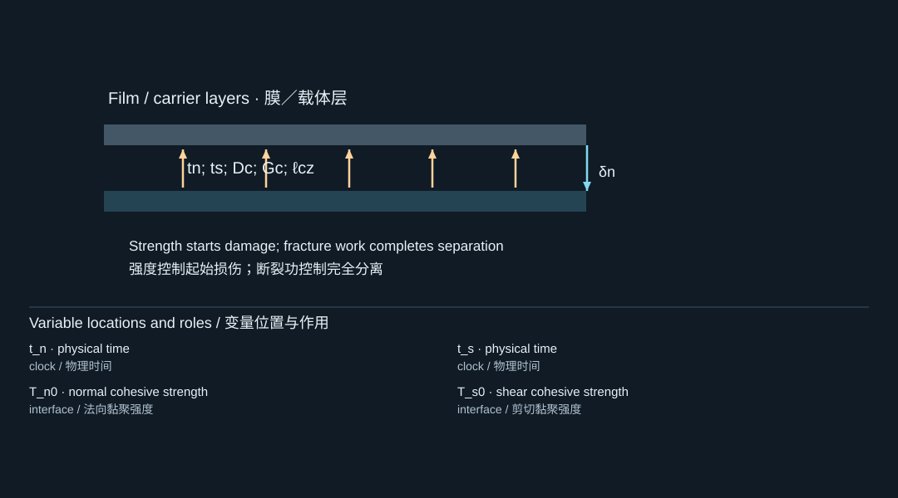
The diagram locates the physical system; its key lists the symbols in the formula. Read the definition in the surrounding derivation when a letter has different roles.
图示标出物理体系，图例列出公式中的符号。若某字母有多种作用，应以邻近推导中的定义为准。
with under a tension-positive convention.
在拉伸为正的符号约定下，。
This condition identifies the onset of damage in the adopted model. It does not by itself specify complete separation. That requires the subsequent traction–separation evolution and fracture energy, schematically
这一条件确定的是所采用模型中的损伤起始，并不能单独确定完全分离。要描述完全分离，还需要后续的牵引–分离演化关系与断裂能，其示意表达为
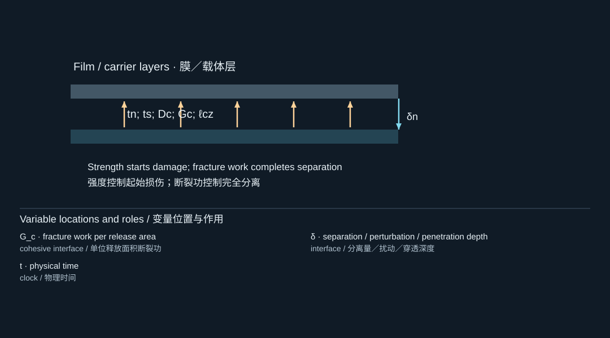
The diagram locates the physical system; its key lists the symbols in the formula. Read the definition in the surrounding derivation when a letter has different roles.
图示标出物理体系，图例列出公式中的符号。若某字母有多种作用，应以邻近推导中的定义为准。
The distinction is analogous to strength versus toughness: reaching an initiation stress is not the same as supplying the work required to propagate separation.
这种区分类似于强度与韧度的区别：达到损伤起始应力，并不等同于提供了使分离继续扩展所需的功。
The source explicitly identifies missing normal and tangential traction histories, rate-dependent strength, mixed-mode fracture energy, and a resolved cohesive zone. [S1, p. 4]
原始材料明确指出，当前缺少法向与切向牵引历程、速率相关强度、混合模态断裂能，以及经过空间解析的黏聚区。[S1，第4页]
There is also a sign-convention issue: positive fluid pressure is compressive, whereas positive cohesive normal traction usually denotes opening tension. The transmitted pressure curve cannot simply be relabelled as cohesive traction without solving the relevant structural/interface problem.
这里还存在符号约定问题：正的流体压力表示压缩，而正的黏聚法向牵引通常表示张开拉伸。在没有求解相应结构或界面问题之前，不能简单地将透射压力曲线改名为黏聚牵引曲线。
Cohesive-zone length scale
黏聚区长度尺度
The source’s scaling
原始材料给出的尺度关系

The diagram locates the physical system; its key lists the symbols in the formula. Read the definition in the surrounding derivation when a letter has different roles.
图示标出物理体系，图例列出公式中的符号。若某字母有多种作用，应以邻近推导中的定义为准。
can be understood from fracture mechanics. With
可以从断裂力学角度理解。由
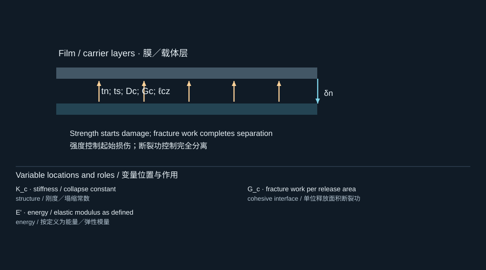
The diagram locates the physical system; its key lists the symbols in the formula. Read the definition in the surrounding derivation when a letter has different roles.
图示标出物理体系，图例列出公式中的符号。若某字母有多种作用，应以邻近推导中的定义为准。
and near-tip stress scaling
以及裂纹尖端附近的应力尺度关系
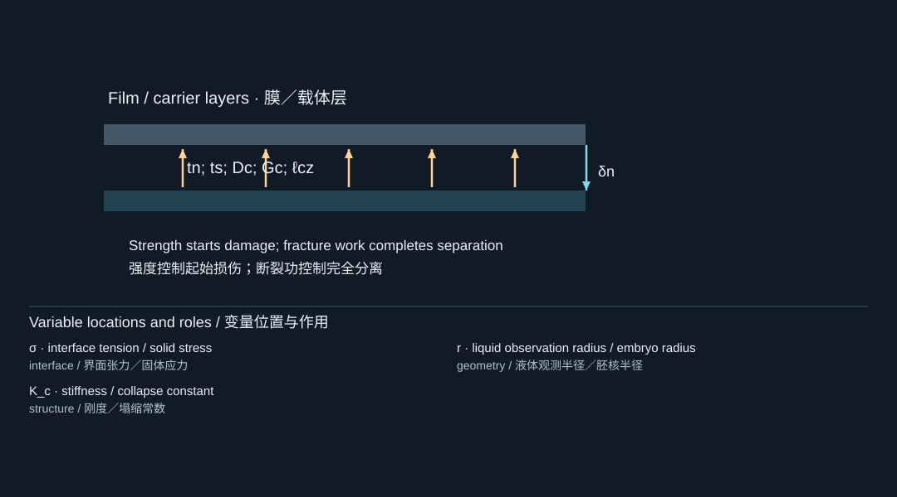
The diagram locates the physical system; its key lists the symbols in the formula. Read the definition in the surrounding derivation when a letter has different roles.
图示标出物理体系，图例列出公式中的符号。若某字母有多种作用，应以邻近推导中的定义为准。
the distance at which stress reaches cohesive strength is
可得应力达到黏聚强度 时的距离尺度
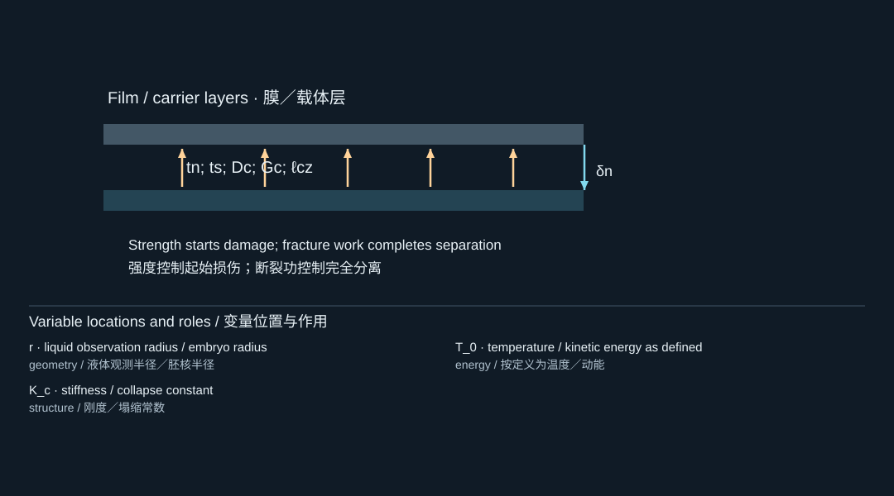
The diagram locates the physical system; its key lists the symbols in the formula. Read the definition in the surrounding derivation when a letter has different roles.
图示标出物理体系，图例列出公式中的符号。若某字母有多种作用，应以邻近推导中的定义为准。
Therefore,
因此
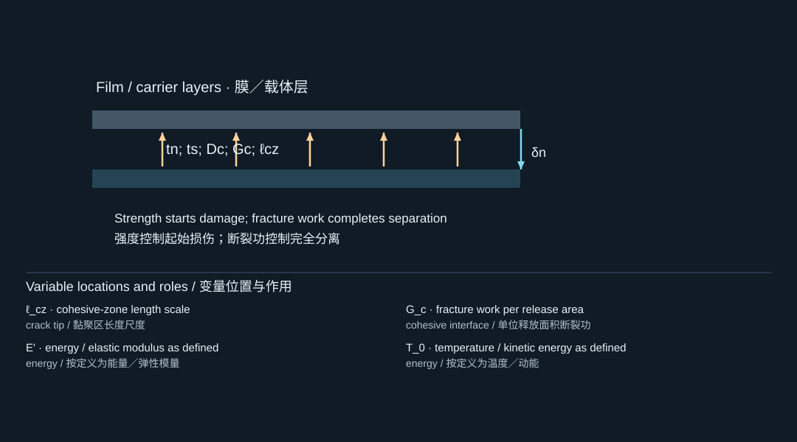
The diagram locates the physical system; its key lists the symbols in the formula. Read the definition in the surrounding derivation when a letter has different roles.
图示标出物理体系，图例列出公式中的符号。若某字母有多种作用，应以邻近推导中的定义为准。
The coefficient depends on the cohesive law and geometry; the scaling explains why a cohesive simulation needs a sufficiently fine mesh.
其比例系数取决于黏聚定律和几何条件；这一尺度关系说明了为什么黏聚仿真需要足够精细的网格。
4.6 Deriving the impulse and energy availability ratios
推导冲量与能量可用性比值
Let be the selected pressure impulse per unit area and the moving mass per unit area. For an idealized rigid layer initially at rest,
以 表示所选压力历程的单位面积冲量，以 表示运动部分的单位面积质量。对于初始静止的理想刚性层，
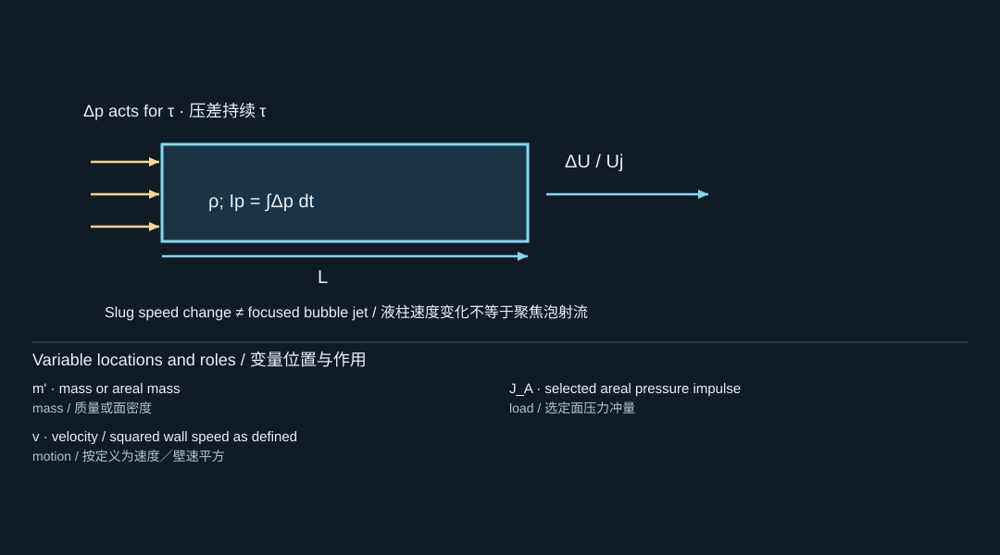
The diagram locates the physical system; its key lists the symbols in the formula. Read the definition in the surrounding derivation when a letter has different roles.
图示标出物理体系，图例列出公式中的符号。若某字母有多种作用，应以邻近推导中的定义为准。
Its kinetic energy per unit area is then
其单位面积动能为
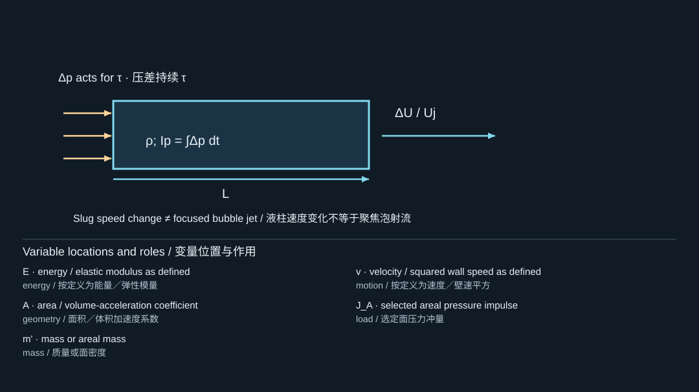
The diagram locates the physical system; its key lists the symbols in the formula. Read the definition in the surrounding derivation when a letter has different roles.
图示标出物理体系，图例列出公式中的符号。若某字母有多种作用，应以邻近推导中的定义为准。
Equating this idealized available energy to defines a nominal impulse scale:
令这一理想化的可用能量等于 ，可定义名义冲量尺度：
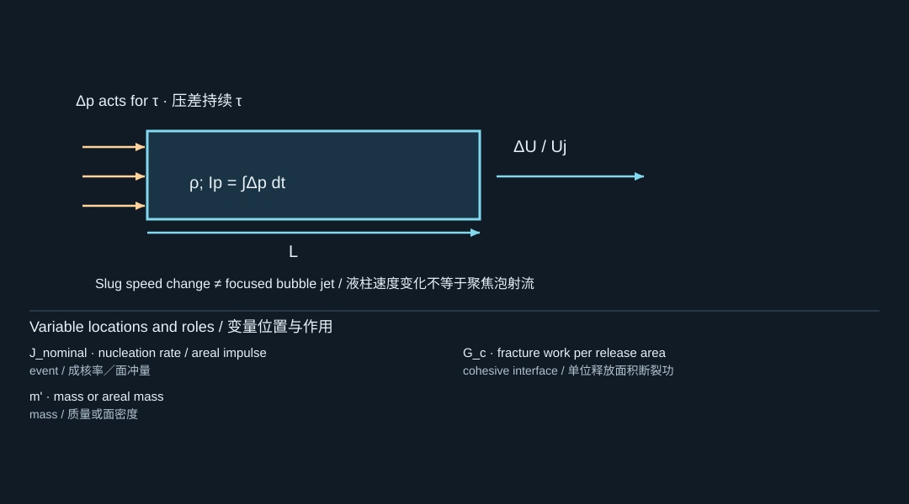
The diagram locates the physical system; its key lists the symbols in the formula. Read the definition in the surrounding derivation when a letter has different roles.
图示标出物理体系，图例列出公式中的符号。若某字母有多种作用，应以邻近推导中的定义为准。
The source therefore forms
因此，原始材料构造了
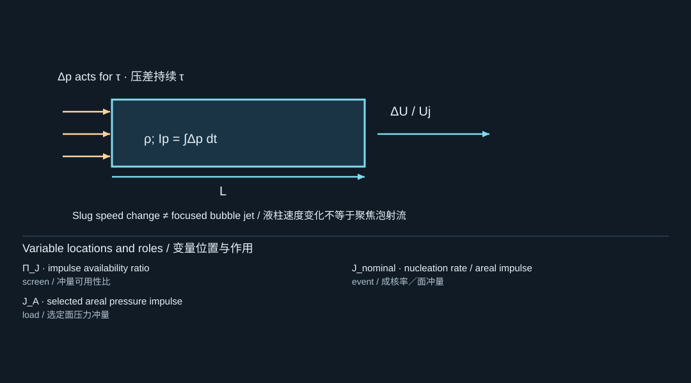
The diagram locates the physical system; its key lists the symbols in the formula. Read the definition in the surrounding derivation when a letter has different roles.
图示标出物理体系，图例列出公式中的符号。若某字母有多种作用，应以邻近推导中的定义为准。
and separately,
以及另一个独立比值
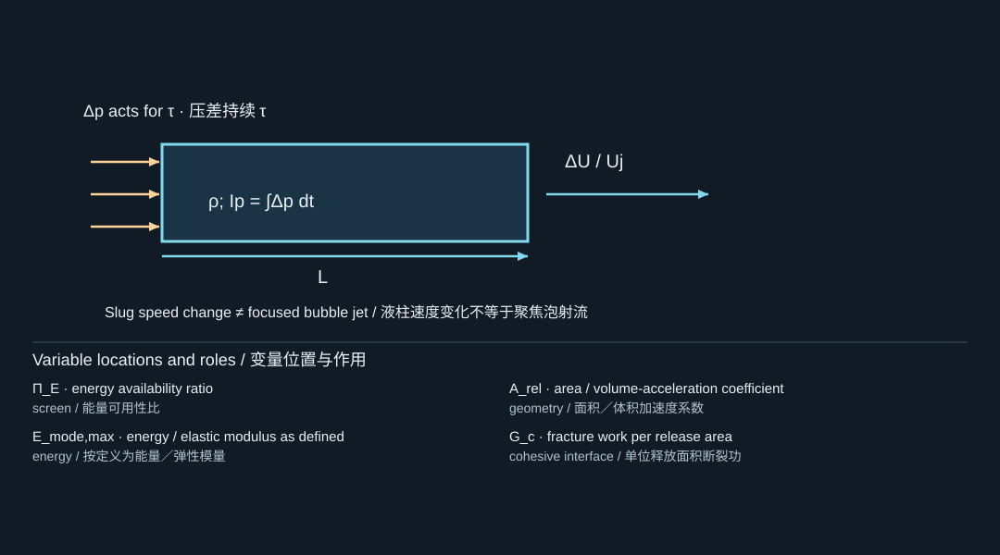
The diagram locates the physical system; its key lists the symbols in the formula. Read the definition in the surrounding derivation when a letter has different roles.
图示标出物理体系，图例列出公式中的符号。若某字母有多种作用，应以邻近推导中的定义为准。
The reported values,
原始材料给出的数值为
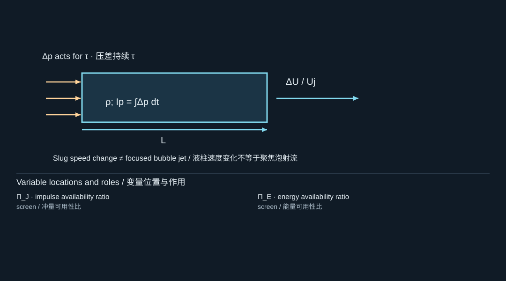
The diagram locates the physical system; its key lists the symbols in the formula. Read the definition in the surrounding derivation when a letter has different roles.
图示标出物理体系，图例列出公式中的符号。若某字母有多种作用，应以邻近推导中的定义为准。
are scalar availability comparisons. They are neither release probabilities nor local energy-release rates. They also need not obey , because the modal-energy calculation and rigid-layer impulse estimate are different reductions. [S1, p. 4]
它们属于标量可用性比较，既不是释放概率，也不是局部能量释放率。它们也不必满足 ，因为模态能量计算与刚性层冲量估计采用了不同的简化模型。[S1，第4页]